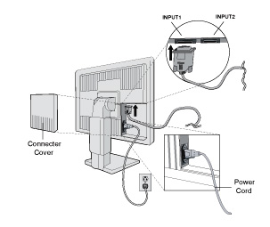
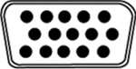
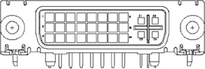

Operating Documentation
Direction 5193891-800, Rev# 5
LightSpeed 5.X Pro16 Limited Access Service Information (Adv)
Operating Documentation |
Illustration 1: LCD Monitor Connections

Monitor rear side DVI-I (analog & digital)
Monitor rear side 15-pin D-Sub (according to PC 99)
Table 1: LCD Monitor - HD D-Sub Connector Pin-Out
| PIN - ASSIGNMENT OF 15-PIN D-SUB: | |||||
| 1 | Red Video | 6 | Red Ground | 11 | Monitor Ground |
| 2 | Green Video | 7 | Green Ground | 12 | DDC-Serial Data |
| 3 | Blue Video | 8 | Blue Ground | 13 | H-Sync. |
| 4 | No Connection | 9 | +5V input *) | 14 | V-Sync. |
| 5 | DDC-Return | 10 | Logic Ground | 15 | DDC-Serial Clock |
| * In case the power of the PC unit is switched off and the power of the monitor is switched on, no voltage may occur at pin 9. | |||||
Illustration 2: LCD Monitor - HD D-Sub Connector Pin-Out

Table 2: LCD Monitor - DVI Connector Pin-Out
| PIN - ASSIGNMENT OF DVI CONNECTOR | |||||
| 1 | TX2- | 9 | TX1- | 17 | TX0- |
| 2 | TX2+ | 10 | TX1+ | 18 | TX0+ |
| 3 | Shield (TX2 / TX4) | 11 | Shield (TX1 / TX3) | 19 | Shield (TX0 / TX5) |
| 4 | TX4- | 12 | TX3- | 20 | TX5- |
| 5 | TX4+ | 13 | TX3+ | 21 | TX5+ |
| 6 | DDC-Serial Clock | 14 | +5V power *) | 22 | Shield (TXC) |
| 7 | DDC-Serial Data | 15 | Ground (H/V sync) | 23 | TXC- |
| 8 | V-Sync. (analog) | 16 | Hot plug detect | 24 | TXC+ |
| C1 | Red Video (analog) | C2 | Green Video (analog) | C3 | Blue Video (analog) |
| C4 | H-Sync. (analog) | C5 | Ground (analog) | - | - |
| * In case the power of the PC unit is switched off and the power of the monitor is switched on, no voltage may occur at pin 14. | |||||
Illustration 3: LCD Monitor - DVI Connector Pin-Out
